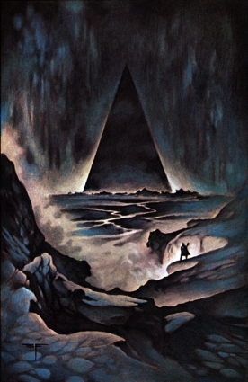

A Mouse in the Walls of the Lesser Redoubt (Part 3)
by
Nigel Atkinson
To A Mouse in the Walls of the Lesser Redoubt (Part 2)
When Naani was six, something went wrong with the Earth-Current machines. At that age she didn’t understand what was happening, but it was very exciting, with people running round fixing lamps and getting meals ready early, so she wasn’t worried that her father had to leave to help fix things. He had sat her on his knee and explained why he had to go away, and had told her not to be scared when the electricity stopped.
“I will soon come back,” he said. “Until the broken thing is fixed we will have to manage with candles and oil lamps. There is nothing to worry about.”
“I’m not worried, daddy,” she said.
The servants scurried round preparing candles and olive oil lamps. At the appointed hour, the power failed. Flickering flames filled rooms with soft, warm light and cast intriguing will-o-the-wisp shadows. She was disappointed when it was bedtime, but her maid left a small oil lamp burning on her dressing table. She watched the little flame dance for a long time.
Then it flickered and died, plunging the room into darkness.
This was darker than when she closed her eyes tightly, or even when she covered her closed eyes up with her hands. Everywhere she turned there was absolute blackness. She wasn’t scared; it was exciting. Carefully she climbed out of bed and took a step — then reached back — the bed was still there — she couldn’t see it, but it was there. Laughing, she spun around. She might not be able to see but she knew where everything was in her room — the dresser was just over there — wardrobe here — the stuffed felt mouse she slept with when she was a little girl just —
Where? She couldn’t remember. She reached out for the bed and her hand closed on air. In an eye blink, the room went from mapped and safe, to dark and terrifying. She stretched her arms out, searching for a familiar surface, suddenly afraid of sharp corners and bruising edges. Then her whole world fell away apart from the little patch of carpet she was crouching on. She wanted to call for help, but was suddenly afraid — the Night Land pressed close and was full of things that wanted to steal her soul.
Seven years later, Naani still kept a nightlight burning, and knew exactly what direction her bedroom door was, and how many steps away. Soul-eating monsters rarely troubled her dreams, even through she knew now that they were real. Her father would protect her.
Mirdath! Mirdath! Mirdath!
“Who’s there?” Naani said. She sat bolt upright in bed, her bed sheets crumpled in her hands. She listened intently but the room was silent. The nightlight glowed on her dressing table, casting soft shadows around the room. Throwing the sheets aside, she stood up, walked over to the nightlight and turned it up to its full intensity. She was alone, and realised she had been dreaming: a strange dream full of the Night Land’s darkness — and a bright warrior. She tried to recall his face, but it was hopeless — after all, he was only a dream.
And what was he saying? Mirdath — who is she?
A wheel turned and a dowel clicked in the sandclock embedded in the wall above her bed; in another hour the household would be rising. She climbed into bed determined to sleep, and maybe catch another glimpse of her bright warrior.
The Gallowglass parried a low sweep, feinted to his right, and slashed at his opponent’s head. But the Moramor saw the attack coming and countered with a textbook vertical block. Their Diskoi crashed in firestorm of electric blue scintillations. Jarred and dazzled by the impact, both men were flung back a pace. Gasping for breath, and shaking their heads to scatter the plagues of insubstantial fireflies half-blinding them, they circled each other warily.
“Had enough yet?” the Gallowglass asked.
“Yes, I yield,” the Moramor said as he spun his weapon hand over hand. In a few turns the quarterstaff, whirling disk and steel-shod foot were a blur. A heartbeat behind, the Gallowglass set his Diskos spinning in sympathy. After twenty minutes of quarterstaff play, they were both tired. The tiniest miscalculation now would be fatal.
Simultaneously, the two warriors released their holds. The Diskoi cartwheeled together and detonated in lambent fury. The air cracked with thunder and the concussion blasted the combatants a dozen yards apart.
The Gallowglass lay on his back. His vision blurred and his ears ringing. Groggily, he hauled himself to his feet and hobbled over to where his opponent lay. The air stank of sulphur and burned iron. The place where their whirling Diskoi met was marked by a ring of shattered and fused metal, which extended across the floor and ceiling, and up both walls. A faint band of charcoal — all that remained of their wooden staffs — surrounded the debris.
The Moramor looked up at the Gallowglass. “I think we can call that a tie, old friend,” he said. “Unless you want to essay the best of three bouts?”
The Master of the Prefecture and his second-in-command embraced each other laughing.
Soon after, Gallowglass and his Moramor were luxuriating in one of the Prefecture’s steam rooms. They lay naked face down on wooden benches, letting the near scalding heat burn their aches and pains away.
“We are getting old, my friend,” the Gallowglass said. “Ten years ago we’d have had no need for soapy massages and steam rooms to cure our aching limbs.”
“Aye, My Lord. No actual need — but that’d not have stopped us. There’s nothing like a good sweltering to keep a man sitting on top of the world.” He raised his voice. “Hey someone, some more water on the coals here!”
After a moment, a young man clad only in a white loin cloth trotted into the room, nodded briefly, then spilled a brass urn of water on the bed of burning coals, filling the room with thick clouds of steam.
“Will there be anything else, My Lords?” he asked.
“Not for now lad, you’re dismissed,” the Moramor said. He lay on his side, wafted the steam away and watched the attendant leave.
“What a strange phrase that was,” the Gallowglass said.
“You want to wax philosophical now?” the Moramor said, gesturing at the wisps of steam still twirling in the wake of the attendant.
“'Sitting on top of the world.' Whatever can that mean?”
“You spend too much time closeted with the Master Monstruwacan. You should get out and do some carousing.”
“I have other things on my mind, Moramor. You would do well to bend your mind to them too, and spend less time about the pleasures of the flesh.”
The Moramor snorted derisively. “Since when did you become a puritan?”
The attendant came back and replenished the steamy atmosphere. When he was gone, the Gallowglass broke the silence.
“How old do you think he is?”
“That’s better. Twenty, twenty-one.”
“Years?”
“No, parsnips.”
“And what is a year — a measure of three hundred and fifty days. And a day — twenty hours. And a hour—”
“I get the point. Well, no, I don’t. Is there a point?”
“Years and days are said to be based on the cycles of the Earth and Sun. But the planet stopped turning and we lost the Sun millions of years ago. Why hold on to these anachronisms?”
“The excitement of possessing arcane, if completely useless, knowledge unknown to the common people?”
“Ha, old friend. You do keep my feet on the floor. Seriously—”
“You want to talk about the murder?”
“Yes.”
“Do you remember the last murders to trouble our world?”
“Of course — twelve years ago — two of our best lads and that fat oaf Filangeri. Do you think the deaths are tied together? The killing of the Bee Master was a far more rarefied affair than slaying by slashing throats. Whoever turned the Monstruwacan’s own bees on him was skilled in the apiarist’s art. It was probably one of the victim’s minions out to revenge some slight or other. I don’t see any connection with the other murders.”
“Four murders in the last three thousand years. All of them on my watch.”
“No one could possibly blame you. If anything—”
“Say it.”
“They blame the Master Monstruwacan.”
“He is our Lord, take care of your tongue.”
“His reforms are pushing people too far—”
“We will ensure that the people do as they are told.”
“Of course. Damn, but you’re in a strange mood. I know a sovereign cure — call that young fella back and invite him to share your sleeping mat tonight. If you don’t I might just myself.”
“Do as you wish, old friend. I have much to think on.”
The Master Monstruwacan threw the sheaf of Hour-Slips onto the table, they fanned out, and a few slid onto the floor. Bergthora bent down to pick them up. She leafed through them and waited for him to calm down. The last of the children had turned twelve this month, and the reports from the Guild of Ancestors were more detailed than ever. Of the original sixty-three children, all but two were still alive. In an age when one in twenty children failed the Circuit of Assessment, that was remarkable in itself. But it was only part of the truth.
Bergthora shuffled the Hour-Slips into a semblance of order and pushed them towards the Master. “The Guild of Ancestors know far too much,” she said.
“No one pays any attention to them. The other Guilds hold them in contempt for having the highest number of apprentice girls on their books.”
“Imposing so many girls on them was a shrewd move on your behalf, My Lord.”
“Do not patronise me. You might share my bed and some of my secrets, but you are not indispensable.
Bergthora bowed her head. “I am sorry, My Lord.”
Scowling, the Master picked up the Hour-Slips and leafed through them with increasing frustration. It was obvious to Bergthora that still had not found what he was looking for. She decided to change the subject.
“My daughter has been apprenticed to the Jackotrade Master’s Guild,” she said. “You would have enjoyed the look on her instructor’s face. The poor man—”
“Do not mock,” the Master said sharply. “Millions of years of tradition cannot easily be set aside. Without the Jackotrades, and the skills of their Masters, the Redoubt would have long ago crumbled to dust. I pondered long before inflicting women on them — they and the Prefects are the most important of the Guilds.”
“And yet the Prefects contribute nothing to future generations.”
The Master’s fist slammed down on the table. “The Prefects are the best of us.”
“Each generation they take the best young men out of our gene pool—”
“It is hardly unknown for young Prefects to sow their wild oats—”
“And thanks be for that small mercy!”
A long uncomfortable silence fell. Bergthora was tempted to ask him boldly what he sought in the children’s lives. But she was afraid to. In the years since he had saved her son’s life, and had recruited her to his cause, the enigma of his motivations had, if anything, deepened.
“Your daughter — I’m sorry her name escapes me,” the Master asked.
“Theodora, My Lord.”
The Master nodded and pulled a scroll-bound sheaf of Hour-Slips out of his gown. Bergthora noted the seal of the Gallowglass on the binding. “Corrosion in the upper gantries, stem-bore in the wheat crop, a drunken brawl in the Shambles — the list of novel problems increases every day.”
“On the other hand, these problems validate your decision to apprentice girls. Every boy capable of passing even the first Estimation was already being recruited. Where else could extra apprentices be found?”
“If you ask most Guildmen, they will suggest that recruiting girls is the root of all of our problems.”
“That’s absurd.”
“Is it?”
He ignored her question. “I must go now, I want to spend some time in the Vault of Ages,” he said, abruptly.
“Maybe you spend too much time in that perilous place, My Lord.”
The Master didn’t reply but pulled his cowl over his head, hiding his face, brushed the curtain aside and left the room. Bergthora wondered, for maybe the hundredth time, whether it was sensible to ally herself to such a powerful and enigmatic man.
The Vault of Ages was home to one thousand two hundred and sixty-three adamantine columns. Each a half-mile high, they held the ancient wisdom of Mankind. From base to top, every pillar was intricately carved in hand-high bands filled with tiny words and pictograms. In many cases the ancient languages had been lost for millions of years. In others, although the words were individually comprehensible, their context was lost. Thinly carved lines separated most of the bands and between every twenty there was a foot-high studded metal ring. The ring allowed two different mechanisms to climb the pillars. The Master Monstruwacan had never used a chairsuit, and never intended to. He didn’t like heights and the idea of being whisked about at reckless speed, high above the ground, was terrifying. In any case, searching by hand and eye was slow and ineffective. It was also dangerous. The Monstruwacan’s Annals were filled with cautionary tales of Masters who were seduced by the Fool’s Gold of the Vault’s lost learning.
The Search Engines were a wiser, if not very much more effective, option.
His hands had danced over the rings at the base of the pillar, spinning some this way and some that way, methodically moving unwanted sections aside to revealing hidden connections.
The Search Engine was about the size of a man crouched into a ball. A silver-grey cowling covered most of its subtle, intricate works. At its base pinions flared from toothed wheels. Two of them hugged the lowest studded ring. Sixteen others were arranged in banks of four around the engine's circumference. The Master inserted his signet ring in a small hole on the engine's cowling. Gears and sprockets whirled as his cachet was read. Then the engine shifted backwards and embraced the pillar where he had left his search instructions. Pinions engaged with inscribed rings, spinning, pushing and pulling them in an exact reversal of the actions the Master had programmed. The process took five minutes. Then the Search Engine whirled towards the darkness above.
He had limited the search to a week, reasoning that should be long enough to track down the most significant references to alterations in the shape and size of the Shine. The Watchers' Guild kept him informed about the continuous subtle physical changes to the home of the Fixed Giants. Recently he had begun to sense that something was brewing under the surface fluctuations. The Watchers' records had little information, so he turned to the greatest, and most frustrating, repository — the Vault of Ages. No one alive understood the indexing system used, or could guess how much knowledge was lost even to the Search Engines. Or if they could be trusted — for all he knew, they might have been designed to hide vast swathes of learning.
Casting his doubts aside, he started to program another Search Engine. This time the algorithm was a familiar one, and the work went quickly. Every month since he was elected twelve years ago, he had searched the Vault for references to the building of a Master-Word machine — the device that would allow telepathic communication with the humans of the Great Redoubt. And every month so far his hopes had been disappointed; they were vast numbers of references to the glorious powers of such a device, but nothing on how to construct one.
After programming some final, subtle adjustments to his search parameters, he sent the machine on its way up a nearby pillar. He was about to leave the Vault, when a thin stream of oil-like liquid climbing easily up a nearby pillar caught his attention. He watched fascinated as the Jackotrade colony went about its inscrutable business. The legions of tiny machines were ubiquitous throughout the Redoubt, tirelessly repairing the tiniest rents and tears in the Redoubt’s fabric. He suspected that, in a real sense, they had been a much more important factor than any Monstruwacan, however elevated, in keeping mankind's last home whole over the aeons.
It was rare to see a colony so united in its purpose. He hoped it was a good omen.
The Garden of Contemplation was one of Naani’s favourite places. She loved the soft wind blowing across the hot sands, and the abstract tinkling of the wind chimes. The limestone pavement that wound sinuously through the garden was cool under her bare feet. She stopped to look at a particularly striking design. Fifty feet across, the basis of the sand painting was a flower with five petals like curved blades. A kaleidoscope of stripes of coloured sand flowed through the design, sometimes seeming to dive under the petals, and at other times to flow over them. As she turned her head, hidden patterns were revealed — cubes and pyramids, octahedra and other shapes she couldn’t put a name too. It was as beautiful as it was enigmatic. No one outside of their Guild knew how the Sand Masters made their designs; the Garden was always closed and guarded by Prefects when they were working.
A breath of wind suddenly threw up a faint layer of fine sand over the flower picture. Naani smiled sadly — this was the way of the Garden — no matter how beautiful a design was, it was doomed to be etched away a grain of sand at a time.
Naani walked on. She was alone, with no chattering maids or Prefects with fearsome weapons. They were just outside the Garden’s gate of course, but she enjoyed the illusion of solitude. Then she saw something strange. For a moment she thought she had caught a Sand Master at work, but she quickly realised it was just a boy. He was about her age, and was lying face-down in the centre of a hexagonal design, kicking his legs and flapping his arms like he was swimming. The sand painting was almost obliterated.
“Prefects!” Naani shouted at the top of her voice.
The boy rolled over and looked at her, then spat on the sand and ran away.
“A pretty thing is she?” Essa asked.
“Who?” Hugh asked with a sinking feeling in his stomach.
“Your new apprentice. What’s her name?”
“Theodora,” Hugh grunted.
“Pretty is she?”
“I can’t say I’ve noticed. Anyhow, she's only fourteen.”
“Well before we know it she’ll be sixteen then eighteen, and she’ll not be a child then.”
Hugh raised his voice in exasperation. “I didn’t ask to have a bloody girl apprenticed to me. Fact is, I bloody near begged for it not to happen.”
“Hope you don’t use that kind of language around your new apprentice. I heard she’s noble-born. Wouldn’t do to have word about your juicy language reaching such exalted ears.”
“Noble-born? Where do you hear such nonsense?”
“Well, that would be saying wouldn’t it. Oh I know! Why don’t you invite her around for evening meal? Then we can all get to know each better.”
“Can’t. She’s busy studying for her first Estimation. Got her head in books and jars for the next couple of weeks. Wouldn’t do to interrupt.”
“All right then, Pumpkin. We’ll have her round after her little test then.”
Hugh groaned, knowing he was beaten.
Caliban was a strange name, but he liked it. The too-clever-by-half tutor who mentioned it was vague when questioned about its origins, saying something about an ancient sorcerer and a flying island. It was obvious the man has no idea what he was talking about, but the boy enjoyed the taste of it in his mouth, so he took it as his secret name.
Honey ran down his chin and his hands were sticky. He licked the outside of the stolen comb, and then snapped it open. A bee was trapped in the wax. He watched fascinated as the insect struggled, its antenna thrashing wildly. It was a long time before the bee gave up the fight, and he watched every second intently. Then he dropped the comb. It fell a long way before he lost sight of it.
He was sitting in a bole of a leafy oak in the Flying Wood half a mile above the floor of the Great Arbour, and was feeling very pleased. His raid had been a complete success. He kicked over three hives and, while the Beekeepers ran frantically around like giant versions of their charges, helped himself to a box of harvested combs. Then he ran away as fast as his twelve-year old legs could carry him. He wasn’t worried about pursuit — he knew plenty of short cuts and hidden bypasses — he just enjoyed running. The bees didn’t worry him either; insects never attacked him, no matter what he did to them.
He was special.
His mother had told him he was special when he was a small child. She thought that he didn’t know. He remembered her whispering when she thought he was asleep, whispering about how he was one of a special generation, and how he might be the one they were looking for. As he grew older his mother stopped coming to him at night, but he had never forgotten her secret hopes. As Bergthora Baumgard’s son, he had a comfortable life with plenty of possessions and most of his whims indulged. But there was something missing. He knew he was supposed to be weak in the Night-Hearing, but he found that difficult to believe. Strangers found him hard to read, but he had no problems reading them, especially when they were thinking about him. As he grew older, his companions — he never through of them as friends — whispered stories about when they visited the Circuit of Assessment. He always found a way to change the subject, often with some over-the-top clowning. He had a vague memory of being terrified in a place with white walls filled with people with dusty white faces. The first time he broached the subject with his mother, she had thrown up instant mental walls and forbade him to mention it again. For several years he tried to wheedle something out of her. He once professed to share her secret faith in Harlequin in the hope of influencing her, but she was adamant in her refusal and angrily added her dead saviour to the list of things Caliban was never, ever to mention.
He leaned back and rubbed his back against the bark. It felt good. On an impulse he ripped a young shoot up and hurled it towards the ground. It fell a long way before it was whisked away by the fold in the Air-Clog. Part of him admired the outrageous vision and skill that hung a substantial hill, covered in gnarled oak trees, half a mile up in the arbour’s sky. Another part wondered how easy it would be to cut the glass ropes that held the Flying Wood up. That would be a sight to see, he thought happily, even better than the look on that prissy girl’s face in the Garden of Contemplation a couple of days ago.
One day I’ll show her and everyone else.
He took a small stone war out of his jerkin and poured a silvery liquid into the palm of his hand. The liquid spread out slowly then contracted into a tight ball. Caliban rolled it around on his palm then closed his hand tightly. A delicious shudder passed through him as the Jackotrades soaked through his flesh and bone, and spread over the back of his hand in a silver sheen.
One day soon.
Hidden in the roof above the Great Arbour was a room containing a failed experiment. It was almost forgotten, except for an obscure reference in the Vault of Ages that the Master Monstruwacan stumbled on a year ago, while hunting for information on the energy fields that the Fixed Giants seem to feed on. There appeared to be no relationship between the things in the Shine and the ancient experiment, but the Vault was full of obscure connections, so he decided to follow the tenuous lead. It took him six months to find the experiment’s location, and another two to get past the locking mechanisms on the chamber’s massive granite cap.
The experiment was located at the bottom of a shaft cut into the bedrock above the Great Arbour. The shaft was a hundred feet deep and lined with foot-thick ceramic bricks. The only way down was by a perilous set of ladder steps cut into the wall. The Master had faced the Fixed Giants in their lair, but the first descent almost unmanned him. After that, and the equally terrifying ascent, he arranged for the Prefects to set up a pulley system with ropes and other safety features. The Moramor arranged the work, and didn’t ask any questions, even when the Master ordered that the system be designed to that a single man could operate it. Nor did he ask why when the Master ordered a round-the-clock guard on the chamber.
The main feature of the experiment was a palladium cube, six feet along each side. It shone as if it had been cast yesterday. Pipes and thick conduits snaked from the base of the cube, and disappeared into the chamber’s walls. The cube was covered with finely incised writing in dozens of different languages. The Master was sure that the writing had nothing to do with the purpose of the machine — it was more like million year-old graffiti.
He took a final wax rubbing of the writings, then prepared for the long haul back up the shaft. After months of study he was still no nearer to understanding what the machine was designed to do. Reluctantly, he accepted that there were no answers here — it was yet another dead end.
To A Mouse in the Walls of the Lesser Redoubt (Part 4)
© 2002 by Nigel Atkinson.
Image copyright by Stephen Fabian.